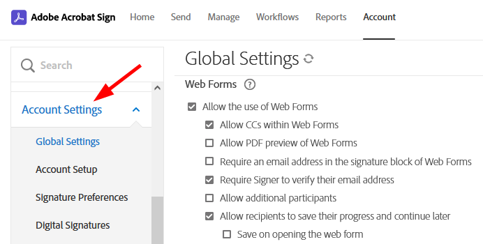

Sign Gov and Commercial Comparison¶
The Acrobat Sign commercial and Sign Gov instances differ in some key ways as described below.
Item |
Sign Gov |
Commercial |
|---|---|---|
Compliance |
FedRAMP Moderate |
PCI and HIPAA |
API application creation |
By Adobe |
Self-service: Account Admin’s can create API applications from Account page Acrobat Sign API > API Applications. |
Top-level domain |
|
|
Authentication mechanisms |
OAuth only |
Commercial accounts can use the legacy API keys, integration keys, and OAuth. |
OAuth |
Does not support |
Supports |
OAuth APIs |
Uses only the APIs described here. |
Uses commercial APIs |
Impersonation |
Exchange admin token for a user-specific token since |
Use an admin token with an |
Login hint parameter |
The |
The |
Endpoints |
See below. |
See below. |
Impersonation setup¶
Unlike Acrobat Sign’s commercial instance, Sign Gov does not support:
Fine grained (scope-level) impersonation.
Impersonating users by passing the user ID or email of the user in the
x-api-userHTTP Header value as part of the REST API call.
Instead, in the Sign Gov environment:
Impersonation applies to all the application scopes.
x-api-useris unsupported, and impersonation involves generating OAuth tokens via the/authorizeand/tokenendpoints.
The Sign Gov impersonation process is as follows:
Generate an
admin_tokenand associatedadmin_refresh_token.Use the
admin_tokento generate animpersonation_token.
Note the following:
Only account admins can generate an
admin_tokenand each token can only be used to generate an impersonation token for users in the same account as the account admin.The lifespan of the
admin_tokenis 5 min.The
admin_refresh_tokenlifetime is unlimited, but will expire if inactive (not used) for more than 30 days.You should persist the
admin_refresh_tokenin a secure storage location (for headless partner integration).
Tip
Check out the Sign Gov Postman collection.
Authentication endpoints¶
Note both the domain and version differences below.
Sign Commercial endpoints:
GET https://secure.na1.adobesign.com/public/oauth/v2: Start the authorization code flow to login and consent to application permissions
POST https://secure.na1.adobesign.com/oauth/v2/token: Obtain anaccess_tokenandrefresh_tokenupon successful completion and redirect back from the authorization code flow
POST https://secure.na1.adobesign.com/oauth/v2/refresh: Obtain a newaccess_tokenbased on arefresh_token
POST https://secure.na1.adobesign.com/oauth/v2/revoke: Revoke anaccess_tokenorrefresh_tokenand any related tokens
Sign Gov endpoints:
POST https://secure.adobesign.us/api/gateway/adobesignauthservice/api/v1/token: Obtain anaccess_tokenandrefresh_tokenupon successful completion and redirect back from the authorization code flow.POST https://secure.adobesign.us/api/gateway/adobesignauthservice/api/v1/refresh: Obtain a newaccess_tokenbased on arefresh_token.POST https://secure.adobesign.us/api/gateway/adobesignauthservice/api/v1/revoke: Revoke anaccess_tokenorrefresh_tokenand any related tokens.POST https://secure.adobesign.us/api/gateway/adobesignauthservice/api/v1/logout: Log the web browser user out of identity provider if the subject matches that in the current identity provider session.
Web app user interface¶
Sign Gov customers will see minor web application differences between their view and the Commercial view. For example, not all account settings apply in the Sign Gov environment, and these are removed from the user interface.
